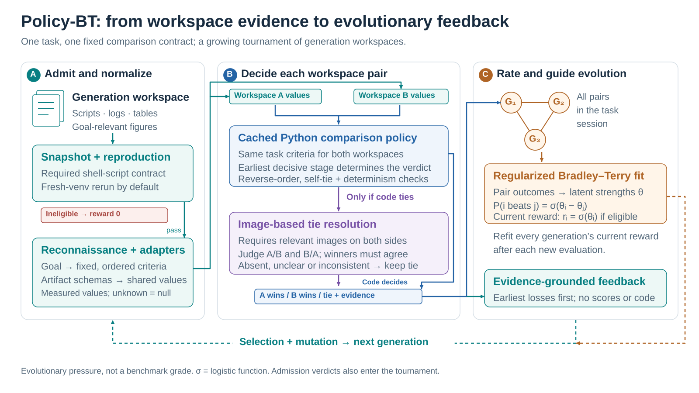
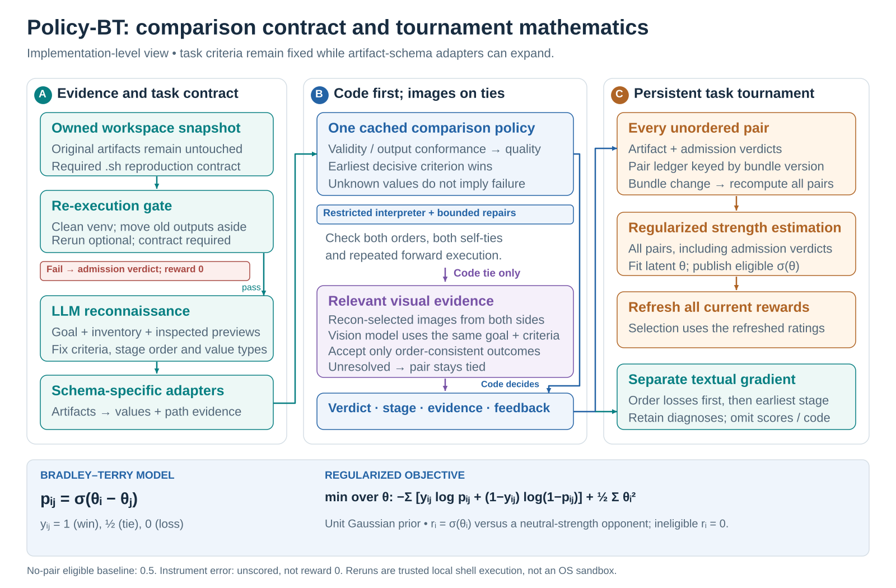
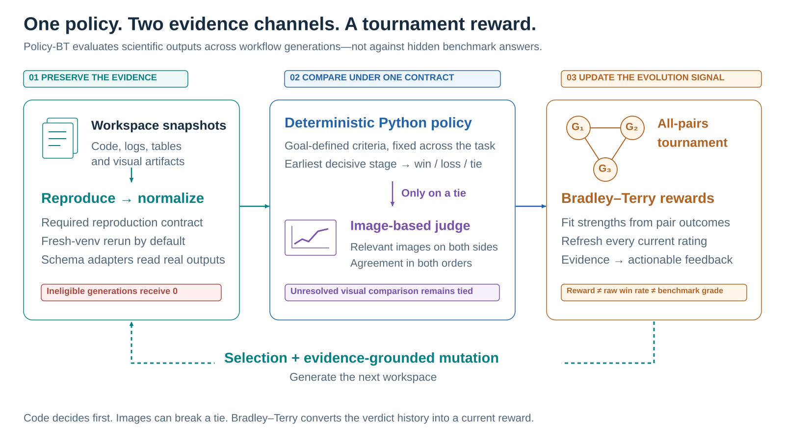

MIMOSA-AI / SCIENTIFIC WORKSPACE EVALUATION
Policy-BT figure collection
Three complementary views of the implemented code-first, image-assisted pairwise verifier and its regularized Bradley–Terry rewards. Editable vector artwork, print-ready PDF, high-resolution PNG, and a native-shape PowerPoint deck.
The key distinction: the code policy or conditional image judge decides the pair. Bradley–Terry fits the resulting verdict history; it does not judge workspace contents directly.
VERSION 01
Policy-BT: from workspace evidence to evolutionary feedback
Recommended for a paper’s main system figure. Three panels separate evidence preparation, pair decisions and tournament feedback.
SVG · editable vector · PDF · vector print · PNG · 4800 px

Publication caption
Policy-BT workspace evaluation. (A) The verifier preserves generation artifacts, checks a required reproduction contract and, by default, reruns the submitted shell script in a fresh virtual environment. Goal-grounded reconnaissance establishes fixed, ordered criteria and schema adapters that read actual artifacts. (B) A shared deterministic Python policy compares normalized evidence at the earliest decisive stage. A code tie may be resolved using relevant images from both sides, but only when judgments in both presentation orders agree. Each pair yields a winner or tie, a stage, evidence and side-specific feedback. (C) A regularized Bradley–Terry model fits all pair outcomes and updates each generation’s current reward. Numeric rewards support selection; evidence-grounded diagnoses guide mutation. Ineligible generations receive zero; the verifier does not supply a benchmark grade.
VERSION 02
Policy-BT: comparison contract and tournament mathematics
Recommended for a methods section or supplementary material. Includes the scoring objective, interpreter checks and failure semantics.
SVG · editable vector · PDF · vector print · PNG · 4800 px

Publication caption
Implementation and scoring details. Snapshot admission precedes artifact comparison. Task criteria, order and representation remain fixed; schema adapters can expand and instrument code can be repaired without changing the success definition. The restricted interpreter checks reverse-order consistency, self-ties and repeated execution. Vision is conditional on a deterministic tie and relevant images from both sides. The tournament contains every unordered generation pair, including execution-admission outcomes. For each ordered representation (i,j) of an unordered pair, y is 1, 1/2 or 0 for an i win, tie or loss. A unit-precision zero-mean Gaussian prior regularizes the Bradley–Terry strengths. The published reward is the logistic probability of beating a neutral-strength opponent, except ineligible generations are forced to zero. Instrument failures are unscored. Pair results are keyed by bundle version. A bundle-version change recomputes every pair; in the current implementation, a new eligible generation changes that version through its schema assignment and visual selection. Current ratings refresh while historical arrival scores and previously emitted gradients are preserved. The first sum runs once over each unordered pair; minimization is over the full strength vector θ. An eligible generation beats an ineligible one; two ineligible generations tie.
VERSION 03
One policy. Two evidence channels. A tournament reward.
Recommended for talks and a 16:9 PowerPoint slide. Larger labels and reduced implementation detail.
SVG · editable vector · PDF · vector print · PNG · 4800 px

Publication caption
Presentation overview. Preserved workspace evidence is admitted and normalized, compared by one task-specific deterministic policy, and optionally judged visually after code ties. The full pair-verdict history feeds a regularized Bradley–Terry fit. All current generation rewards refresh; evidence-grounded feedback guides subsequent mutation. Neither raw win rate nor hidden benchmark labels define the reward. Admission verdicts precede the two artifact-evidence channels and also enter the tournament.
Use and interpretation
- Paper: use SVG or PDF to retain vector lines and text. The network is schematic; no illustrative reward numbers are presented as measurements.
- PowerPoint: all three figures are included as editable text, shapes and connectors on 16:9 slides. The methods figure is centered with side margins to preserve its taller aspect ratio. Full captions and source notes are in the speaker notes.
- Typography: Arial, with Helvetica / sans-serif fallback. Text remains editable. The PNGs are 4800 pixels wide with 600 dpi metadata; the vector files are resolution independent.
- Default path: reruns and the visual channel are enabled by default. The reproduction script contract remains mandatory when reruns are disabled. Image judgment requires relevant evidence on both sides and agreement across presentation orders.
- Ratings: ties contribute half-wins to the fit; the prior precision is 1. Every generation participates in the pair ledger, including admission outcomes. Ineligible published rewards are overridden to zero. An eligible participant with no pairs has reward 0.5.
- Failure semantics: submission reproduction failure is not a verifier instrument error. Instrument errors leave the generation unscored and the committed tournament unchanged. Reruns execute trusted local shell code, not an OS sandbox.
- Two feedback paths: current ratings feed selection; diagnoses feed mutation. The gradient does not expose numeric ratings or comparison-policy source. Earlier emitted gradients remain historical even as ratings refresh.
- Scope: goal-grounded evolutionary pressure, not official benchmark grading or access to hidden ground truth. Criteria stay fixed; adapter and policy-code repairs may change the bundle version without redefining success.
Implementation provenance
Checked against the local implementation on 2026-10-16. Source paths are repository-relative.
docs/concepts/evaluation-pipeline.md:35–141 — pipeline, admission, current rewards and selection.sources/evaluators/policy_bt_verifier/evaluator.py:130–268,351–364 — capture, all-pairs evaluation, optional vision, admission verdicts.sources/evaluators/policy_bt_verifier/prompts.py:13–66,88–153 — goal-derived criteria, adapter evidence and earliest decisive stage.sources/evaluators/policy_bt_verifier/policy.py:898–934,1146–1207,1257–1304 — restricted execution, symmetry, self-ties, determinism and repairs.sources/evaluators/policy_bt_verifier/visual.py:96–155 — relevant-image selection and both-order agreement.sources/evaluators/policy_bt_verifier/tournament.py:9–99 — unit prior, fractional ties, logistic fit and zero-reward override.sources/evaluators/policy_bt_verifier/results.py:25–40,79–129 — loss-first feedback, refreshed ratings and preserved historical gradients.